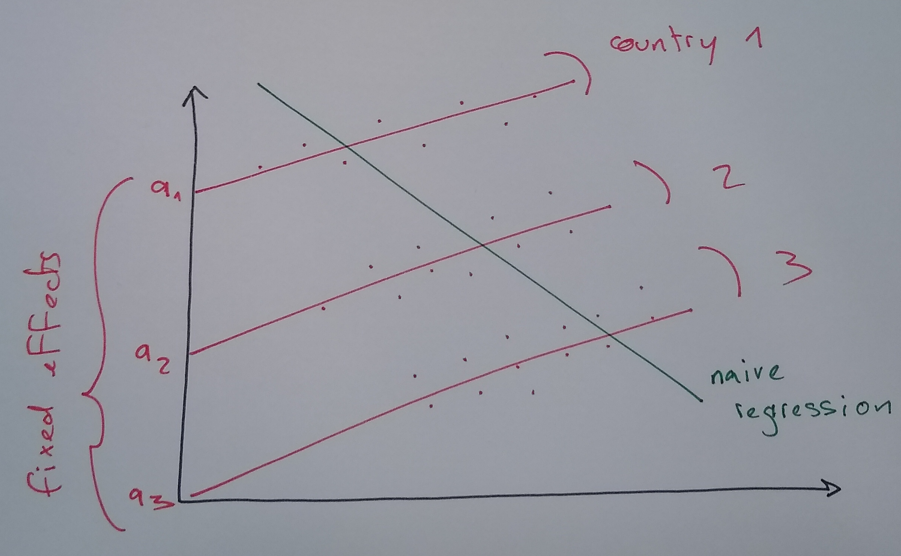

Panels
Time and space
Time and Space
Until now, we have been rather loose about where the data comes from:
Trying to explain \(N\) observations: \(y_n = a + b x_n, n\in [1,N]\)
All these lonely observations, where do they all come from?
Individuals: cross section

Dates: time-series

Time Series
- very simple study: structural break
- does regression on \([T_1, \overline{T}]\) yield (significantly) different results on \([\overline{T}, T_2]\)
- going further: time series analysis
- data is typically autocorrelated
- example (AR1) \(x_t = a + b x_{t-1} + \epsilon_t\)
Longitudinal Data / Panel Data
Repeated cross sectional studies
Index individual by \(i\in [1,J]\) and time by \(t\in[1,T]\) [graph repeated cross-sectional]
we can study evolution of the regression over time \[\text{date 1}: y_{i,1} = a_1 + b_1 x_{1,1}\] … \[\text{date t}: y_{i,t} = a_i + b_i x_{i,1}\] … \[\text{date T}: y_{i,T} = a_T + b_T x_{i,T}\]
\(y_{i,t}\) and \(y_{i,t+1}\) are unrelated
One big regression: pooled regression.
Even better: longitudinal data
- [graph longitudinal data]
The same individuals are followed over time.
We can study the evolution of individuals while taking into account their heterogeneity
Balanced vs Unbalanced
- Balanced: all individuals in the sample are followed from 1 to T
- Unbalanced: some indivuduals start later, stop earlier

-
Crude solutions:
- truncate the dates between \([T_1, T_2]\) so that dataset is balanced
- eliminate individuals who are not present in the full sample
-
Not very good:
- can limit a lot the size of the sample
- can induce a “selection bias”
-
Real gurus know how to deal with missing values
- many algorithms can be adapted
Long and wide format
- we tend to prefer here the long format (w.r.t id and date)
- there can be many columns though (for each variable)
Micro-Panel vs Macro-Panel
- micro-panel: \(T<<N\)
- Panel Study of Income Dynamics (PSID): 5000 consumers since 1967 (US)
- reinterview same individuals from year to year
- but some go in/out of the panel
- Survey of Consumer and Finance (SCF)
- …
- Panel Study of Income Dynamics (PSID): 5000 consumers since 1967 (US)
- macro-panel: \(T\approx N\)
- WIIW: 23 countries since the 60s (central, east and southern Europe)
Taking heterogeneity into account
What if you don’t take it into account ?

- Suppose we want to explain the growth rate of several countries
- Let’s do a big regression (pooled regression) \[y_{i,t} = a + b x_{i,t}\] (pooled regression)
-
What was missing?
- There must be some effects, not captured by the regression, specific to each individual
- -> Unobserved heterogeneity
Fixed effect

- capture idiosyncratic variability by adding an individual specific constant \[ y_{i,t} = a + a_i + b x_{i,t} + \epsilon_{i,t}\] \(a_i\) is called a fixed effect
- We assume some structure on the data to discipline the regression.
- How can we estimate the model? i.e. find plausible values for \(a\), \(a_i\), \(b\), \(\sigma(\epsilon)\), etc.
- We focus on OLS estimator: \[\min_{a,a_i, b} \sum_{i,t} ( y_{i,t} - \underbrace{a + a_i + b x_{i,t}}\_{\text{predicted value}} )^2\]
Fixed effect (implementation)
- Fixed effect regression: \[ y_{i,t} = a + a_i + b x_{i,t} + \epsilon_{i,t}\] is equivalent to \[ y_{i,t} = a.1 + a_1 d\_{i=1} + \cdots + a_I d_{i=I} + b x_{i,t} + \epsilon_{i,t}\] where \(d\) is a dummy variable such that \(d_{i=j} = \begin{cases}1, & \text{if}\ i=j \\\\ 0, & \text{otherwise}\end{cases}\)
- Minor problem: \(1, d_{i=1}, ... d_{i=I}\) are not independent: \(\sum_{j=1}^I \delta_{i=j}=1\)
- Solution: ignore one of them, exactly like the dummies for categorical variables
- Now the regression can be estimated with OLS…
Estimation methods
- … Now the regression can be estimated with OLS (or other)
- naive approach fails for big panels (lots of dummy regressors makes \(X^{\prime}X\) hard to invert)
- smart approach decomposes computation in several steps
- “between” and “within” estimator (for advanced panel course)
- software does it for us…
- Like always, we get estimates and significance numbers / confidence intervals
Time Fixed Effects
- Sometimes, we know the whole dataset is affected by common time-varying shocks
- assume there isn’t a variable we can use to capture them (unobservable shocks)
- We can use time-fixed effects to capture them: \[ y_{i,t} = a + a_t + b x_{i,t}\]
- Analysis is very similar to individual fixed effects
Both Fixed Effects
- We can capture time heterogeneity and individual heterogeneity at the same time. \[ y_{i,t} = a + a_i + a_t + b x_{i,t}\]
- More of it soon.
Limitation of fixed effects
- Problem with fixed effect model:
- each individual has a unique fixed effect
- it is impossible to predict it from other characteristics
- … and to compare an individual’s fixed effect to the predicted value
- Solution:
- instead of assuming that specific effect is completely free, constrain it to follow a distribution: \[y_{i,t} = \alpha + \beta x_{i,t} + \epsilon_{i,t}\] \[\epsilon_{i,t} = \epsilon_i + \epsilon_t + \epsilon\]
- where \(\epsilon_{i}\), \(\epsilon_t\) and \(\epsilon\) are random variables with usual normality assumptions
Other models
Composed coefficients: (coefficients can also be heterogenous in both dimension)
\[y_{i,t} = \alpha_i + \alpha_t + (\beta_i + \beta_t) x_{i,t} + \epsilon_{i,t}\]
Random coefficients …
Diff in Diff
Example of Panel Data Estimator: Diff in Diff quasi-experiment
- Setup:
- Population \(i\in[1,I]\)
- We follow the whole population at two successive dates \(t_1\) and \(t_2\).
- We measure outcome \(y\)
- Individuals in group \(\mathcal{G}_T\) receive treatment \(T\)
- How do we measure the effect of the treatment?
- Examples
- tutoring at school (afternoon lessons)
- \(y\): final grade
- dates: beginning (\(t_1\)), end of year (\(t_2\))
- \(T_{i}\) whether subject received afternoon sessions.
- tutoring at school (afternoon lessons)
Gaphical summary:

Diff-in-diff regression: by hand
- What we want:
- Average change over time in the outcome variable for the treatment group,
- Compare with average change over time for the control group
- Idea: regress simultaneously \[\forall i \in \mathcal{G}\_T, \quad y_{i,2} - y_{i,1} = \alpha + \beta x_{i,t} + \epsilon_{i,t}\] \[\forall i \notin \mathcal{G}\_t, \quad y_{i,2} - y_{i,1} = \alpha + \delta + \beta x_{i,t} + \epsilon_{i,t}\]
- Hypotheses:
- equal trend (\(\alpha\) is the same in both groups)
- same effect of all other variables (\(\beta\) is the same)
- \(\epsilon_{i,t}\) normally distributed, independent, etc….
- \(x_{i,t}\): (controls) other variables that might explain differences in learning speed
- must be independent from \(\epsilon\) and \(T\)
Diff-in-diff regression
- Using Panel data: \[y_{i,t} = \beta_{t} + \delta T_{i} + \beta x_{i,t} + \epsilon_{i,t}\] or using time dummies: \[y_{i,t} = \underbrace{\beta_1 1_{t=1} + \beta_2 1_{t=2}}\_{\text{time fixed effects}} + \delta T_{i} + \epsilon_{i,t}\]
- By construction the diff in diff is directly given by \(\delta\)
- convince yourself: the effect of time, is completely captured by the fixed effect
- This specification allows for an average change over time that is the same for the two groups
Time and individual fixed effects
- We can do better:
- imagine we follow the population at many dates
- some receive the treatment at \(t=1\), some at \(t=2\), etc…
- suppose there is unobserved heterogeneity
- Code up the treatment: \(T_{i,t}\) if treatment was received before \(t-1\)
- If we don’t take unobserved heterogeneity, we might get completely wrong results.
- Solution:
- use time-fixed effect: to capture common trend
- use individuals indicators: to capture individual heterogeneity
- You might implement a specification like: \[y_{i,t} = a_{i} + a_t + \delta T_{i,t} + \beta x_{i,t} + \epsilon_{i,t}\]
In practice
- With
linearmodels(example):- individual fixed effects:
invest ~ 1 + value + capital + EntityEffects - time fixed effects:
invest ~ 1 + value + capital + TimeEffects - both
invest ~ 1 + value + capital + EntityEffects + TimeEffects
- individual fixed effects:
- Regress with PanelOLS
- mathematically equivalent to OLS but more efficient